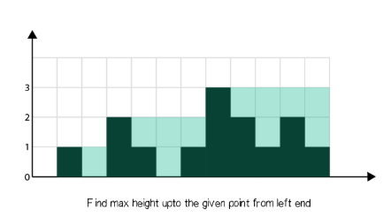
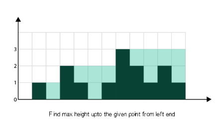

这里可以采用提前计算，然后保存这些值。
开两个最高值数组，分别是从左往右遍历，和 从右往左遍历。
如下图所示：


| 创建时间： | 2020/4/4 22:45 |
| 更新时间： | 2020/4/5 0:40 |
| 作者： | lzr |
暴力解法有两种思路，一种是计算每个高度有多少水，一种是计算每列能存多少水
j-i-count-1在暴力解法2中，每遍历到一个柱子，都要去寻找最高值。
这里可以采用提前计算，然后保存这些值。
开两个最高值数组，分别是从左往右遍历，和 从右往左遍历。
如下图所示：

找到数组中从下标 i 到最左端最高的条形块高度left_max。
找到数组中从下标 i 到最右端最高的条形块高度 right_max。
扫描数组 height
并更新答案：
累加 min(max_left[i],max_right[i]) - height[i]到ans上
代码链接
时间：O(n) 遍历三次
空间：O(n)
这种解法也可以理解为木桶效应，举个例子：
C位置能蓄的水的量，取决于它两侧最低的那一个

对于C，它能存储的高度取决于它左右两侧最高值中低的那一个，也就是B和F中最低的B。
思路：我们维护两个指针，分别是从左到右遍历到的柱子left , 和从右到左遍历到的柱子right。
存两个变量，max_left 和
max_right；
如果当前的’max_left < max_right，则遍历到的点的高度取决于max_left。
如果当前点的值，如果它的值比当前决定它的方向的最大值小，则ans+=max_left(或right)-height[left(或right)]，如果比最大值大，就更新最大值。做完这些后把对应的指针往前推移。
伪代码：
推荐自己画个图遍历一下就清楚了
代码链接
解法2中多开了俩数组，浪费了一定的空间，可以使用一个单调栈来存储可能储水的柱子。这样使用栈就可以在一次遍历中完成。
思路：
如果当前的条形块小于或等于栈顶的条形块，我们将条形块的索引入栈，意思是当前的条形块被栈中的前一个条形块界定。如果我们发现一个条形块长于栈顶，我们可以确定栈顶的条形块被当前条形块和栈的前一个条形块界定，因此我们可以弹出栈顶元素并且累加答案到
ans 。
伪代码：
代码链接